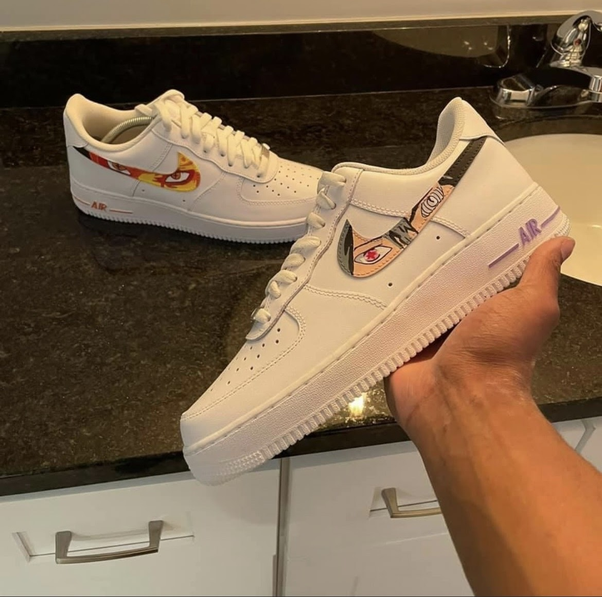
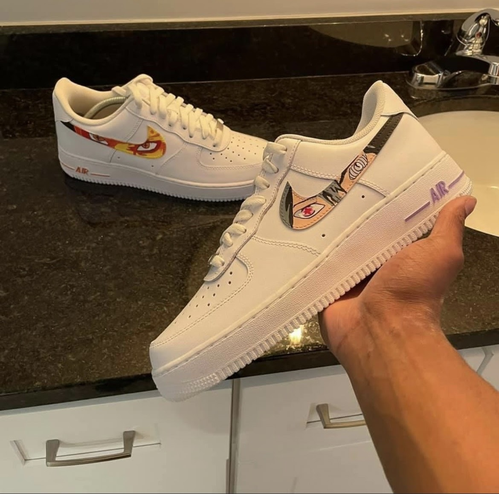

Customer have the option of providing the shoes for customization, in which they would be responsible for paying for labor and paint. Pick up and drop off options will be discussed upon scheduling The alternate option is have the shoe provided for the customization. If customer would like the shoe to be provided, they will be responsible for paying for the subtotal of the shoe , labor, and paint.
Customs are available for any kind of shoe. However, please note that customers must provide any shoe valued at $150 and up.
**Refund Policy is not affective for customization service.
 



Customization is also availble for shirts, hats, and other clothing pieces.
Skybox Kicks also specializes in reselling authentic sneakers. Inquies about resell oppurtunites should be emailed to the skybox buisness email located in the "Contact & Scheduling" tab. ***Please note that the return policy is affective for 7 days, after the purchase.
All availble resell items are displayed in the "Resell" section located on the Home page or on the company Instagram @Skybox_Kicks.